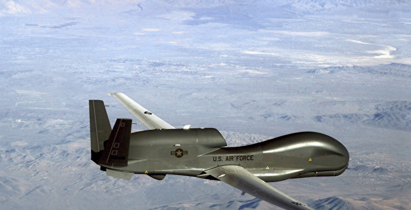
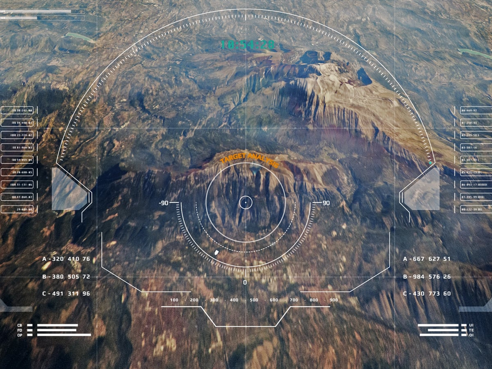

CONTENT
by 羽肿
OVERVIEW
With Computer Vision, people nowadays can apply more and more precise and complicated operations
on different images such as Object Detection, Object Segmentation, Image Reconstruction, and Image Synthesis.
Also, CV system can be part of a larger system to accomplish various tasks, like the Face Recognization system, Motion Capture system,
Automatic Driving Vehicles and Medical Image Analysis.
- Image Reconstruction
- Object Detection
- Automatic Driving
- Motion Capture system

The following parts will demonstrcte some example of these applications,
you can also click here for more CV applications->
Automation Industry
 From the point of view of industrial vision system, it mainly includes two aspects.
From the point of view of industrial vision system, it mainly includes two aspects.
One is the inspection system of industrial vision. The use of vision technology to analyze the image of the measured product is conducive to improving the detection level.
Now, visual inspection and image processing system are significant for product quality inspection, with high efficiency and precision, to control and improve the quality of product.
In an visial inspection system, resolution is very critical, so the system has higher requirements for image resolution. In the grayscale change, the main indicator is the light source, and the focus of detection is to control the camera's sensitivity and dynamic range. In the spatial change, the resolution of the image is guaranteed by the related theorem. In the light source vision system, the actual situation of the image processing will have an impact on the system operation effect, so a higher intensity signal should be used to obtain various information of the measured object, such as position, size, shape, etc.
The second is the industrial robot system. This is an application where computer vision system become part of the manufacturing system. With the help of real time image analysis system, an automated systems or an intelligent industry robots can be able to adapt to changing environment and make autonomous decisions. Then Robots can replace humans in various occasions to complete heavy and monotonous work with higher efficiency. Further more, they are now able to deal with more precise operations than humans can do.
Automatic Driving
 The field of computer vision plays a vital role in the field of self-driving cars, because it enables self-driving cars to perceive and understand their surroundings in order to operate correctly.
The field of computer vision plays a vital role in the field of self-driving cars, because it enables self-driving cars to perceive and understand their surroundings in order to operate correctly.
One of the most exciting challenges in computer vision is object detection in images and videos. This involves the ability to locate different numbers of objects and classify them in order to distinguish whether the objects are traffic lights, cars or people. This technology is combined with the analysis of data from other sources (such as sensors and/or radar) to enable the car to "see".
CV for Military Usage
 Military applications are probably one of the largest areas for computer vision. The obvious examples are detection of enemy soldiers or vehicles and missile guidance. More advanced systems for missile guidance send the missile to an area rather than a specific target, and target selection is made when the missile reaches the area based on locally acquired image data.
 Military applications are probably one of the largest areas for computer vision. The obvious examples are detection of enemy soldiers or vehicles and missile guidance. More advanced systems for missile guidance send the missile to an area rather than a specific target, and target selection is made when the missile reaches the area based on locally acquired image data.
Military applications are probably one of the largest areas for computer vision. The obvious examples are detection of enemy soldiers or vehicles and missile guidance. More advanced systems for missile guidance send the missile to an area rather than a specific target, and target selection is made when the missile reaches the area based on locally acquired image data.
 Military applications are probably one of the largest areas for computer vision. The obvious examples are detection of enemy soldiers or vehicles and missile guidance. More advanced systems for missile guidance send the missile to an area rather than a specific target, and target selection is made when the missile reaches the area based on locally acquired image data.